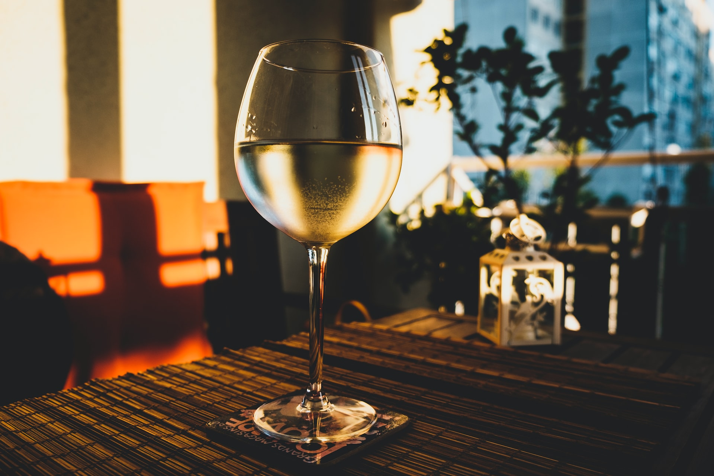
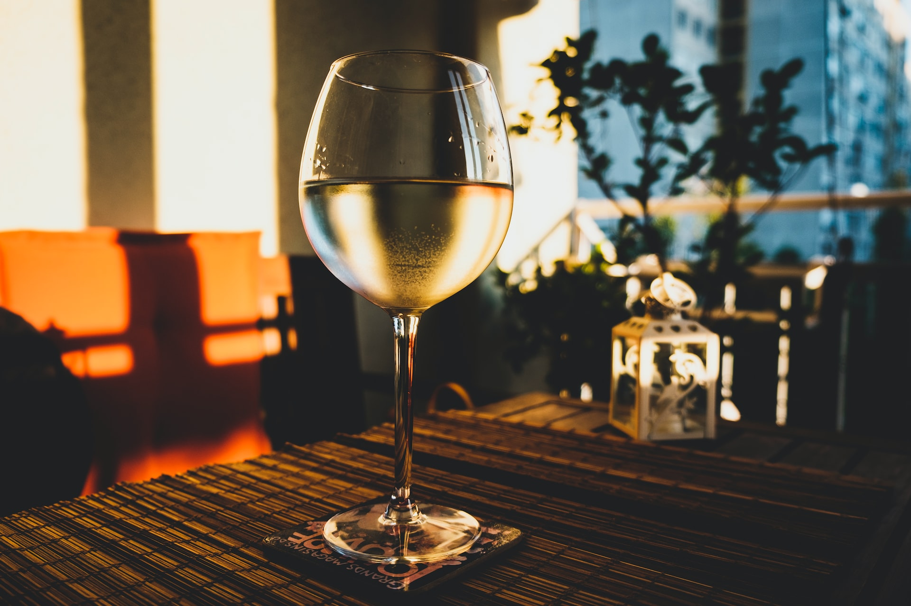
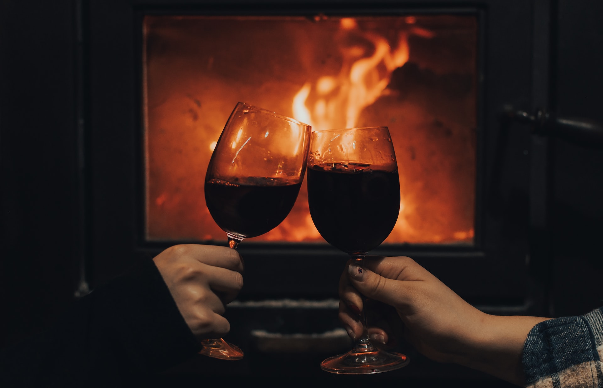
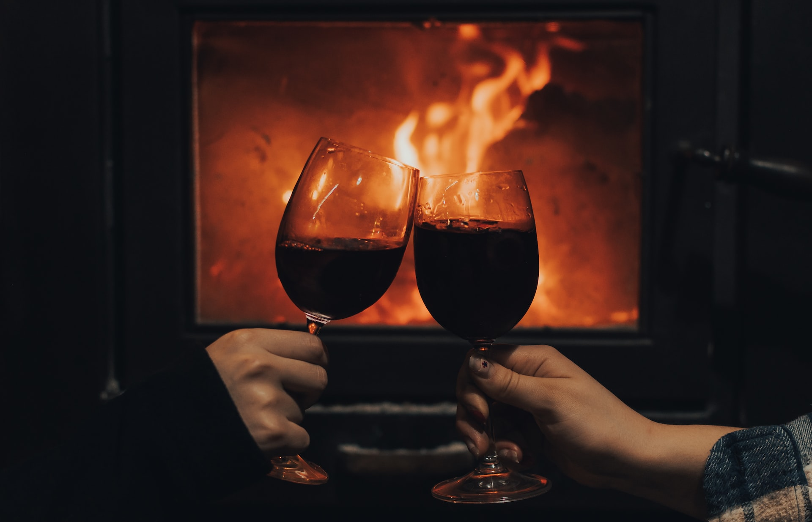

 

Sparkling & Dry White
What exactly is white wine? White wine is wine that is white, but it's defining characteristic is light fruity flavors derived from white and/or green grapes. Sparkling wine is exactly what it sounds like! It's wine with bubbles, colloquially known as “bubbly”. Dry white wine is white wine, but it has a lot of something called “tannins”, or something that makes the wine have a 'dry' feeling in your mouth. The average alcohol content of both kinds is around 10% per-bottle. Since these varieties aren't as aged as redder wines, you'll be set-back around $8-$18, depending on the quality. Our picks: Cava, Brut, Moscato.
Sweet White & Rich White
Sweet white wine is white wine that's, well., sweet. Rich white wine is white wine that is sweet, but very sweet. The average alcohol content of both kinds is around 12% per-bottle. Since these varieties aren't as aged as redder wines, you'll be set-back around $8-$18, depending on the quality. Our picks: Pinot Grigio, Champagne, Rosé.
Light Red & Medium Red
What exactly is red wine? Red wine is wine that is red, but its defining characteristic is more bold, flavorful fruity flavours derived from red and/or purple grapes. Light red wine is red wine, but like light white wine, it goes easy on the flavor. Medium red is a step-up rom a light red, but isn't as strong as a bold red. The average alcohol content of both kinds is around 13% per-bottle. Since these varieties are a little more aged than white wines, you'll be set-back around $10-$30, depending on the quality. Our picks: Riesling, Pinot Noir, Syrah.
Bold Red & Dessert
Bold red wine is wine that explodes with flavor, and rivals even a rich white. Dessert wine is a type of bold wine, but it leans more on the sweet side with hints of nutty flavours. The average alcohol content of both kinds is around 15% per-bottle. Since these varieties are more aged than light and medium red wines, you'll be set-back around $15-$50, depending on the quality. Our picks: Zinfandel, Shiraz, Sherry, Port.